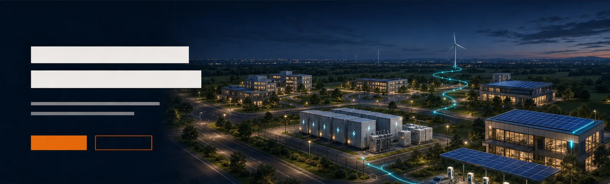

在虚拟世界中
验证未来能源系统
01未来城市电力系统
微网 · 光伏 · 储能 · 电动交通
LIVING ENERGY SYSTEMS
让能源系统，
像生态一样生长。
模型库构成系统的根系，数智孪生连接设计与验证，技术服务把能力带进真实项目。三块业务彼此独立，也能按任务组合。
首页幕图为未来能源场景概念表达，不等同于已交付案例。
01 / MODEL LIBRARY
模型库
系统能力的根系
围绕新能源、电气设备、储能与综合能源，建设可组合、可扩展、面向工程验证的 MATLAB/Simulink 模型资产。
模型库产品正在准备- L1
基础组件
电机、电力电子、控制器、传感器及热力部件等基础单元。
- L2
设备模型
风电、光伏、储能、制氢、电网与负荷等设备对象。
- L3
系统与案例
微网、源网荷储、综合能源与绿氢等组合场景。
标准化资产按任务组合形成可验证系统
02 / DIGITAL TWIN
数智孪生
让系统持续可见
以新能源模型库为底座，组织项目、场景、拓扑、任务和结果，连接图形化配置、Python 服务与 MATLAB/Simulink 仿真执行。
数智孪生产品正在准备光伏系统储能系统交流母线
PRECHECK
SIMULATION
EVIDENCE
方案设计
管理项目、资产、场景、模型库版本、拓扑与设备参数。
仿真推演
完成拓扑校验、任务调度、真实模型组装、仿真与结果展示。
分阶段扩展
运行数据接入、状态同步、诊断与优化能力按产品路线逐步接入。
当前能力边界：软件现阶段重点建设“方案设计与仿真推演”底座；运行数据孪生、诊断预测和优化决策不作为现阶段已完成功能宣传。
03 / TECHNICAL SERVICES
技术服务
陪伴项目落地
从需求边界到模型开发、系统验证和成果交付，为复杂能源项目提供明确、可复核的工程路径。
技术服务内容正在准备咨询与方案设计
需求分析、技术路线、系统架构与仿真验证方案。
- 需求与系统边界
- 技术路线与架构
- 验收条件规划
定制建模与开发
设备模型、控制算法、系统场景与软件功能定制。
- 模型与参数开发
- 控制策略实现
- 场景与软件集成
验证与技术支持
测试设计、结果分析、模型优化、培训与持续支持。
- 测试与证据整理
- 结果分析与优化
- 培训和后续支持
- 01明确需求
- 02冻结边界
- 03开发验证
- 04成果交付
APPLICATION FIELD
面向不同任务，
组合不同深度。
产品能力不是固定套餐。根据对象、工况、软件环境和预期结果，选择模型、软件与服务的组合方式。
高校教学
课程模型、实验任务、结果观察与数字化实训。
科研院所
算法研究、场景构建、参数调整与仿真验证。
能源企业
系统方案、控制策略、运行效能与交付支撑。
START A PROJECT